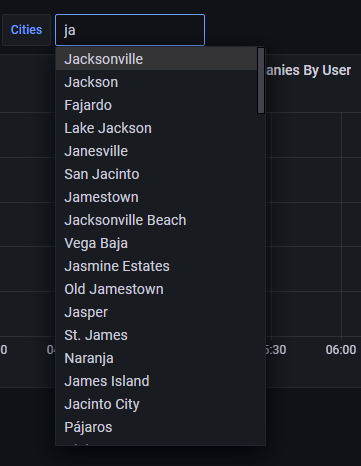

ClickHouse 会在大规模场景下让你悄无声息地踩坑：从实战中总结的排坑与调优指南
文章背景与核心概要
ClickHouse 以其极致的查询速度在标准可观测性领域（如指标与常规日志）广受赞誉，然而当面对每日 20 亿行网络防火墙系统日志这种非典型超大规模场景时，其最致命的弱点便暴露无遗——静默失效 (Fail Silently)。ClickHouse 从不会主动提醒你查询语句写得有多糟糕或索引配置有多离谱，而是任由系统多读取 84 倍的数据、跳过主键剪枝，甚至悄无声息地退化为全表扫描。本文基于真实的生产级压测实操，深度剖析了手写过滤条件、排序列设计、物化投影 (Projections) 以及 Grafana 插件中的四大经典陷阱，并给出了基于 system.query_log 与 EXPLAIN 的严谨验证指南。
核心摘要：虽然 ClickHouse 在标准的可观测性工作流（如 OTel 指标和日志）中开箱即用、速度极快，但当面对非典型的大规模工作负载——比如每天 20 亿行的网络防火墙 syslog 日志时，它最危险的特性就会显现出来：它总是静默失效。ClickHouse 绝不会主动警告你的查询或配置效率低下；相反，它会若无其事地让你多读取 84 倍的数据、执行错误配置的过滤器，或者悄然退化为全表扫描。因此，在编写任何查询之前，养成借助 system.query_log 和 EXPLAIN 进行严格验证的习惯是不可妥协的底线。
💬 [原文引用 / Original Quote]: Summary: While ClickHouse is famously fast and efficient out of the box for standard observability workflows (like OTel metrics and logs), pushing it into atypical, high-volume workloads—such as 2 billion rows a day of network firewall syslog—reveals its most dangerous trait: it fails silently. ClickHouse will never tell you your query or configuration is inefficient; instead, it gracefully lets you read 84x more rows than necessary, execute misconfigured filters, or silently fallback to raw table scans. Building strict verification habits (
system.query_logandEXPLAIN) before writing any queries is non-negotiable.
测试环境与架构配置
Setup
在这项极限压力测试中，底层基础设施保持了清晰直接的架构设计：
For this torture test, the infrastructure stayed straightforward:
- ClickHouse：通过 Altinity 算子 (Altinity Operator) 部署了 2 分片 × 3 副本的集群。每张底表均为
ReplicatedMergeTree，并通过Distributed分布式表对外提供统一访问，Grafana 仅针对分布式封装表发起查询。 - Grafana：采用官方
grafana-clickhouse-datasource插件，面板包含 25 个图表组件，并在顶部配置了同时作用于所有图表组件的动态即席过滤器 (Ad-hoc Filters)。 - 硬性防护底线 (Hard Guardrails)：设置了
max_rows_to_read= 10 亿行，max_bytes_to_read= 100 GB，max_execution_time= 60 秒，且全部配置为throw阻断模式（即超限立即抛出异常熔断）。
- ClickHouse: 2 shard x 3 replicas via the Altinity operator. Every table is a
ReplicatedMergeTreewrapped inDistributedtables, with Grafana exclusively querying the wrapper.- Grafana: Using the official
grafana-clickhouse-datasourceplugin with 25 panels and top-level ad-hoc filters affecting every panel simultaneously.- Hard Guardrails:
max_rows_to_read= 1 billion,max_bytes_to_read= 100 GB,max_execution_time= 60s, all set tothrowmode.
经验教训一：切忌手写防御性过滤条件
Lesson 1: Don't Handwrite the Filters
在最初的草稿中，我编写过滤条件时采用了标准的 SQL 防御性守卫语句，以确保在用户未做输入时查询依然合法：
My first draft wrote filters using standard SQL guards to keep queries valid regardless of user input:
WHERE (empty({{observer}}) OR observer IN {{observer}})
这个看似稳妥的决定却对查询性能造成了灾难性的打击：
This decision severely impacted performance:
| 谓词表达式 | 读取行数 | 执行耗时 |
|---|---|---|
observer = 'one-device'（直接过滤） |
305 万行 | 115 毫秒 |
(empty(...) OR col IN ...) 守卫语法 |
2.5764 亿行 | 1,134 毫秒 |
Predicate Rows Read Time observer = 'one-device'(direct)3.05M 115 ms (empty(...) OR col IN ...)guard257.64M 1,134 ms
这种守卫语法直接破坏了 ClickHouse 的主键剪枝 (Primary-Key Pruning) 机制，迫使引擎触发全分区数据扫描，然后再逐行执行后置过滤。
The guard prevented primary-key pruning, triggering a full partition scan with post-filtering.
解决方案：改用 Grafana 自带的即席过滤机制 (Ad-hoc Filtering)。该插件并不会重写 WHERE 子句，而是将过滤条件以 ClickHouse 查询设置 (additional_table_filters) 的形式进行追加，直接在查询规划阶段生效，从而完美保留索引剪枝能力。
The Fix: Use Grafana's ad-hoc filtering mechanism. Rather than rewriting the
WHEREclause, the plugin appends the filter as a ClickHouse query setting (additional_table_filters), applying it at planning time for proper pruning.
| 过滤形式 | 读取行数 | 执行耗时 |
|---|---|---|
| 无任何过滤 | 2.5690 亿行 | 1,265 毫秒 |
手写 WHERE observer = '...' |
467 万行 | 170 毫秒 |
| Grafana 即席过滤 | 467 万行 | 284 毫秒 |
Form Rows Read Time No filter 256.90M 1,265 ms Hand-written WHERE observer = '...'4.67M 170 ms Ad-hoc filter 4.67M 284 ms

经验教训二：排序列至关重要……但有玄机
Lesson 2: Sort Keys Matter... Sorta
我最初设定的 ORDER BY 排序子句看起来合情合理——优先按照基数 (Cardinality) 最低的网络设备列进行排序：
My initial
ORDER BYclause seemed logical—sorting by the lowest cardinality column (network device) first:
ORDER BY (observer, action, application, toStartOfHour(Timestamp), Timestamp)
然而，由于 Grafana 面板天然带有时间范围约束，这个设计反而弄巧成拙。在 ClickHouse 中，只有排在排序列最前端的字段，才能真正走上快速查找的高速公路。
However, because Grafana panels are inherently time-bound, this backfired. In ClickHouse, only the front of the sort key gets the fast lookup path.
ClickHouse 中 ORDER BY 的物理运作原理
How
ORDER BYWorks in ClickHouse
与传统 MySQL 等关系型数据库不同，ClickHouse 中的排序索引直接决定了数据在磁盘上的物理布局（就像一本先按姓氏再按名字排序的电话簿）。ClickHouse 每隔 8,192 行数据（称为一个数据颗粒 / Granule）记录一次排序键的值，从而构建出一张主键索引书签表：
Unlike MySQL, the index defines physical layout on disk (like a phone book sorted by last name, then first name). ClickHouse writes sort-key values every 8,192 rows (a granule), forming a primary key bookmark list:
- 查找“所有姓史密斯 (Smith) 的人”：可以直接精准跳到 S 字母所在的物理存储区间（速度极快）。
- 查找“所有名字叫约翰 (John) 的人”：约翰分散在每一个不同的姓氏区间中，因此必须翻遍整本电话簿进行全盘扫描（速度极慢）。
- "All the Smiths" → Jump straight to the S section (Fast).
- "Everyone named John" → Johns are scattered across every last-name section, requiring a full read (Slow).
为什么时间戳字段需要出现两次
Why Timestamp Appeared Twice
我的排序键中同时包含了 toStartOfHour(Timestamp)（按整小时对齐的时间分桶）以及精确到微秒的 Timestamp。在任意固定的设备分组内，先按小时排序再按精确时间排序，能够完全保持原始的先后顺序，而不会发生行数据的交错重排。
My key included
toStartOfHour(Timestamp)(the hour bucket cutoff) followed byTimestamp(the exact time). Within any fixed group, sorting by hour then exact time preserves the exact same sequential order without re-ordering rows.
- 原排序键：
(observer, action, application, hour, Timestamp)→ 时间字段埋得太深，导致在查询最新 N 条末尾日志（ORDER BY Timestamp DESC LIMIT 1000）时，引擎不得不遍历每个设备对应的数据块。 - 新排序键：
(toStartOfHour(Timestamp), observer, action, application, Timestamp)→ 将小时时间桶提到最前面，使得指定时间范围内的数据在磁盘上形成单块连续区间。
- Old Key:
(observer, action, application, hour, Timestamp)→ Time sat too deep, forcing newest-N tail-log queries (ORDER BY Timestamp DESC LIMIT 1000) to walk every device's block.- New Key:
(toStartOfHour(Timestamp), observer, action, application, Timestamp)→ Puts the time bucket first, making an hour range a single contiguous block.
⚠️ 警告：ClickHouse 的
MODIFY ORDER BY无法对已有字段进行重新排序、前置插入或合并；它仅仅支持在末尾追加新列。如果项目第一天建表时选错了排序键，后续必须新建一张表，在承载实时数据写入的同时为每个分片回填约 520 GiB 的历史数据，最后再执行原子性表切换 (Atomic Swap)。💬 [原文引用 / Original Quote]: Warning:
MODIFY ORDER BYcannot reorder, prepend, or absorb existing columns; it only appends new ones. Getting the key wrong on day one requires creating a new table, backfilling ~520 GiB per shard under live ingest, and executing an atomic swap.
经验教训三：物化投影远比想象的更棘手
Lesson 3: Projections are Trickier Than I Thought
物化投影 (Projections) 相当于在同一张表内部按另一套物理顺序维护一份备用数据副本，并且会在每次执行 INSERT 时自动同步增量更新。
A projection acts as an alternative physical ordering of data stored directly inside the same table, updating automatically on
INSERT.
然而，ClickHouse 对物化投影的表达式匹配要求极其苛刻且毫无容错空间：
However, expression matching is strict and unforgiving:
- 聚合函数必须完全对齐：若投影中只定义了
count()和sum(duration)，则对于请求avg(duration)的查询，该投影完全无法被复用。 - 过滤列必须包含在
GROUP BY中：遗漏过滤列会导致引擎悄无声息地放弃投影，直接退化为开销巨大的原始底表全量扫描。 - 谓词表达式必须精准字面匹配：使用
toStartOfHour(Timestamp) >= X能被正确路由命中；但如果写成toStartOfInterval(Timestamp, INTERVAL 1 HOUR) >= X（即便两者在数学和业务逻辑上完全等价），也会静默引发全表扫描降级。
- Aggregates must match:
count()andsum(duration)will not be used by a query asking foravg(duration).- Filter columns must be in the
GROUP BY: Omitting them causes a silent, costly fallback to raw tables.- Exact predicate matching is required: Using
toStartOfInterval(Timestamp, INTERVAL 1 HOUR) >= X(even with identical logical values) triggers a silent full fallback.
| WHERE 子句形式 | 是否命中投影路由？ | 读取数据行数 |
|---|---|---|
| (无) | 是 | 2,022 行 |
toStartOfHour(Timestamp) >= X |
是 | 2,022 行 |
toStartOfInterval(Timestamp, INTERVAL 1 HOUR) >= X |
否 | 12,373,248 行 |
Timestamp >= X（直接查原始字段） |
否 | 12,373,248 行 |
WHERE Clause Routed? Rows Read (none) Yes 2,022 toStartOfHour(Timestamp) >= XYes 2,022 toStartOfInterval(Timestamp, INTERVAL 1 HOUR) >= XNo 12,373,248 Timestamp >= X(raw)No 12,373,248
经验教训四：Grafana 的 ClickHouse 插件暗藏暗礁
Lesson 4: Grafana ClickHouse Plugin Has Sharp Edges
Grafana 官方的 ClickHouse 插件虽然功能强大，但在实际使用中也存在不少隐秘的踩坑点：
While the Grafana plugin is powerful, it contains hidden failure modes:
- 静默忽略拼写错误：在即席过滤配置中，若未填写包含数据库 schema 的全限定表名而仅填了裸表名，安全过滤条件会被静默忽略，从而导致查询意外返回千万级无用数据。
- 布尔逻辑表达受限：其图形交互界面限制每个键只能绑定单一操作符和取值，这导致类似
observer = A OR observer = B这样的多选或逻辑条件无法以优雅直观的方式表达。
- Silently Ignored Typos: An unqualified table key instead of a schema-qualified one in ad-hoc filter configs silently bypasses safety filters, returning tens of millions of unexpected rows.
- Boolean Limits: The UI offers one operator and value per key, making expressions like
observer = A OR observer = Bimpossible to express cleanly.
总结
Conclusion
ClickHouse 无疑是一款性能强悍的分析利器，但一旦将其推向海量规模，其缺乏防护机制与静默失效的特质就会被急剧放大。正因为引擎在出错或降级时从不报错示警，工程师必须在日常开发中主动建立深度的验证习惯——深度结合 system.query_log、EXPLAIN 以及严苛的抽样校验，时刻确保每一条查询都切实跑在预想的极速路径之上。
ClickHouse is an incredible tool, but scale exposes its lack of guardrails. Because it fails silently, developers must proactively build verification habits—relying heavily on
system.query_log,EXPLAIN, and exhaustive sanity checks to ensure queries are actually hitting their optimized paths.